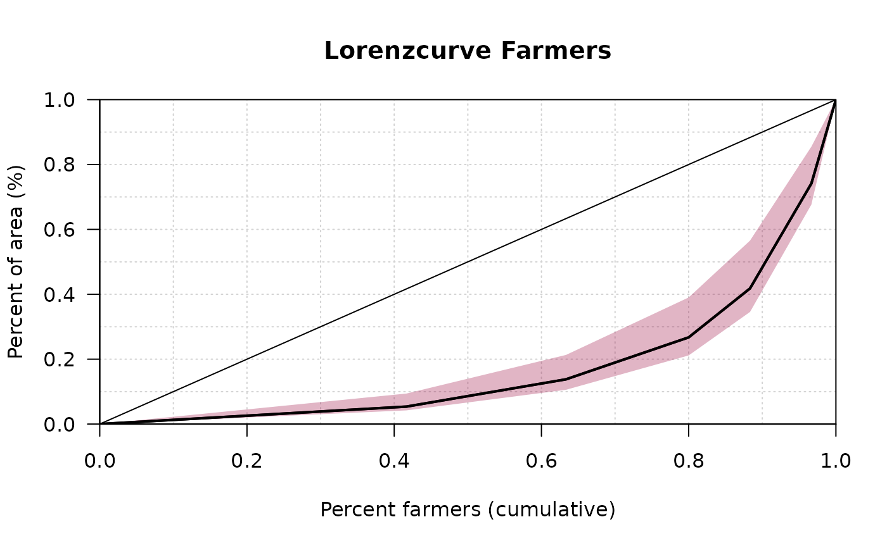
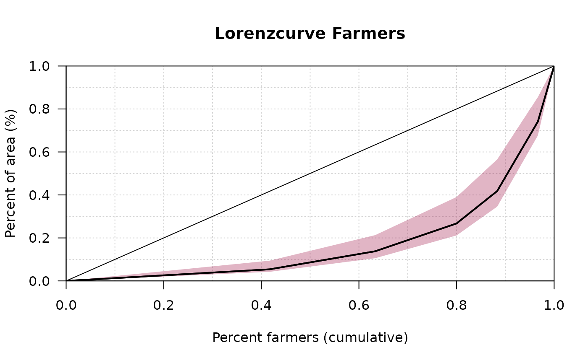

Lorenz Curve
Lc.RdLc computes the (empirical) ordinary and generalized Lorenz curve of a vector x. Desc calculates some key figures for a Lorenz curve and produces a quick description.
Lc(x, ...)
# S3 method for default
Lc(x, n = rep(1, length(x)), na.rm = FALSE, ...)
# S3 method for formula
Lc(formula, data, subset, na.action, ...)
# S3 method for Lc
plot(x, general = FALSE, lwd = 2, type = "l", xlab = "p", ylab = "L(p)",
main = "Lorenz curve", las = 1, pch = NA, ...)
# S3 method for Lclist
plot(x, col = 1, lwd = 2, lty = 1, main = "Lorenz curve",
xlab = "p", ylab = "L(p)", ...)
# S3 method for Lc
lines(x, general = FALSE, lwd = 2, conf.level = NA, args.cband = NULL, ...)
# S3 method for Lc
predict(object, newdata, conf.level=NA, general=FALSE, n=1000, ...)Arguments
- x
a vector containing non-negative elements, or a Lc-object for plot and lines.
- n
a vector of frequencies, must be same length as
x.- na.rm
logical. Should missing values be removed? Defaults to FALSE.
- general
logical. If
TRUEthe empirical Lorenz curve will be plotted.- col
color of the curve
- lwd
the linewidth of the curve
- lty
the linetype of the curve
- type
type of the plot, default is line (
"l").- xlab, ylab
label of the x-, resp. y-axis.
- pch
the point character (default is
NA, meaning no points will be drawn)- main
main title of the plot.
- las
las of the axis.
- formula
a formula of the form
lhs ~ rhswherelhsgives the data values and rhs the corresponding groups.- data
an optional matrix or data frame (or similar: see
model.frame) containing the variables in the formulaformula. By default the variables are taken fromenvironment(formula).- subset
an optional vector specifying a subset of observations to be used.
- na.action
a function which indicates what should happen when the data contain NAs. Defaults to
getOption("na.action").- conf.level
confidence level for the bootstrap confidence interval. Set this to
NA, if no confidence band should be plotted. Default isNA.- args.cband
list of arguments for the confidence band, such as color or border (see
DrawBand).- object
object of class inheriting from "Lc"
- newdata
an optional vector of percentages p for which to predict. If omitted, the original values of the object are used.
- ...
further argument to be passed to methods.
Details
Lc(x) computes the empirical ordinary Lorenz curve of x
as well as the generalized Lorenz curve (= ordinary Lorenz curve *
mean(x)). The result can be interpreted like this: p*100 percent
have L(p)*100 percent of x.
If n is changed to anything but the default x is
interpreted as a vector of class means and n as a vector of
class frequencies: in this case Lc will compute the minimal
Lorenz curve (= no inequality within each group).
Value
A list of class "Lc" with the following components:
- p
vector of percentages
- L
vector with values of the ordinary Lorenz curve
- L.general
vector with values of the generalized Lorenz curve
- x
the original x values (needed for computing confidence intervals)
- n
the original n values
Note
These functions were previously published as Lc() in the ineq package and have been
integrated here without logical changes.
References
Arnold, B. C. (1987) Majorization and the Lorenz Order: A Brief Introduction, Springer
Cowell, F. A. (2000) Measurement of Inequality in Atkinson, A. B. / Bourguignon, F. (Eds): Handbook of Income Distribution. Amsterdam.
Cowell, F. A. (1995) Measuring Inequality Harvester Wheatshef: Prentice Hall.
See also
The original location Lc(),
inequality measures Gini(), Atkinson()
Examples
priceCarpenter <- d.pizza$price[d.pizza$driver=="Carpenter"]
priceMiller <- d.pizza$price[d.pizza$driver=="Miller"]
# compute the Lorenz curves
Lc.p <- Lc(priceCarpenter, na.rm=TRUE)
Lc.u <- Lc(priceMiller, na.rm=TRUE)
plot(Lc.p)
lines(Lc.u, col=2)
 # the picture becomes even clearer with generalized Lorenz curves
plot(Lc.p, general=TRUE)
lines(Lc.u, general=TRUE, col=2)
# inequality measures emphasize these results, e.g. Atkinson's measure
Atkinson(priceCarpenter, na.rm=TRUE)
#> [1] 0.05286775
Atkinson(priceMiller, na.rm=TRUE)
#> [1] 0.04893621
# income distribution of the USA in 1968 (in 10 classes)
# x vector of class means, n vector of class frequencies
x <- c(541, 1463, 2445, 3438, 4437, 5401, 6392, 8304, 11904, 22261)
n <- c(482, 825, 722, 690, 661, 760, 745, 2140, 1911, 1024)
# compute minimal Lorenz curve (= no inequality in each group)
Lc.min <- Lc(x, n=n)
plot(Lc.min)
# the picture becomes even clearer with generalized Lorenz curves
plot(Lc.p, general=TRUE)
lines(Lc.u, general=TRUE, col=2)
# inequality measures emphasize these results, e.g. Atkinson's measure
Atkinson(priceCarpenter, na.rm=TRUE)
#> [1] 0.05286775
Atkinson(priceMiller, na.rm=TRUE)
#> [1] 0.04893621
# income distribution of the USA in 1968 (in 10 classes)
# x vector of class means, n vector of class frequencies
x <- c(541, 1463, 2445, 3438, 4437, 5401, 6392, 8304, 11904, 22261)
n <- c(482, 825, 722, 690, 661, 760, 745, 2140, 1911, 1024)
# compute minimal Lorenz curve (= no inequality in each group)
Lc.min <- Lc(x, n=n)
plot(Lc.min)
 # input of frequency tables with midpoints of classes
fl <- c(2.5,7.5,15,35,75,150) # midpoints
n <- c(25,13,10,5,5,2) # frequencies
plot(Lc(fl, n), # Lorenz-Curve
panel.first=grid(10, 10),
main="Lorenzcurve Farmers",
xlab="Percent farmers (cumulative)",
ylab="Percent of area (%)"
)
# add confidence band
lines(Lc(fl, n), conf.level=0.95,
args.cband=list(col=SetAlpha(DescToolsOptions("col")[2], 0.3)))

Gini(fl, n)
#> [1] 0.8914222
# find specific function values using predict
x <- c(1,1,4)
lx <- Lc(x)
plot(lx)
# get interpolated function value at p=0.55
y0 <- predict(lx, newdata=0.55)
abline(v=0.55, h=y0$L, lty="dotted")
# and for the inverse question use approx
y0 <- approx(x=lx$L, y=lx$p, xout=0.6)
abline(h=0.6, v=y0$y, col="red")
text(x=0.1, y=0.65, label=expression(L^{-1}*(0.6) == 0.8), col="red")
text(x=0.65, y=0.2, label=expression(L(0.55) == 0.275))
# input of frequency tables with midpoints of classes
fl <- c(2.5,7.5,15,35,75,150) # midpoints
n <- c(25,13,10,5,5,2) # frequencies
plot(Lc(fl, n), # Lorenz-Curve
panel.first=grid(10, 10),
main="Lorenzcurve Farmers",
xlab="Percent farmers (cumulative)",
ylab="Percent of area (%)"
)
# add confidence band
lines(Lc(fl, n), conf.level=0.95,
args.cband=list(col=SetAlpha(DescToolsOptions("col")[2], 0.3)))

Gini(fl, n)
#> [1] 0.8914222
# find specific function values using predict
x <- c(1,1,4)
lx <- Lc(x)
plot(lx)
# get interpolated function value at p=0.55
y0 <- predict(lx, newdata=0.55)
abline(v=0.55, h=y0$L, lty="dotted")
# and for the inverse question use approx
y0 <- approx(x=lx$L, y=lx$p, xout=0.6)
abline(h=0.6, v=y0$y, col="red")
text(x=0.1, y=0.65, label=expression(L^{-1}*(0.6) == 0.8), col="red")
text(x=0.65, y=0.2, label=expression(L(0.55) == 0.275))
 # input of frequency tables with midpoints of classes
fl <- c(2.5,7.5,15,35,75,150) # midpoints
n <- c(25,13,10,5,5,2) # frequencies
# the formula interface for Lc
lst <- Lc(count ~ cut(price, breaks=5), data=d.pizza)
plot(lst, col=1:length(lst), panel.first=grid(), lwd=2)
legend(x="topleft", legend=names(lst), fill=1:length(lst))
# input of frequency tables with midpoints of classes
fl <- c(2.5,7.5,15,35,75,150) # midpoints
n <- c(25,13,10,5,5,2) # frequencies
# the formula interface for Lc
lst <- Lc(count ~ cut(price, breaks=5), data=d.pizza)
plot(lst, col=1:length(lst), panel.first=grid(), lwd=2)
legend(x="topleft", legend=names(lst), fill=1:length(lst))
 # Describe with Desc-function
lx <- Lc(fl, n)
Desc(lx)
#> ------------------------------------------------------------------------------
#> lx (list)
#>
#> $xname
#> [1] "lx"
#>
#> $label
#> NULL
#>
#> $class
#> [1] "list"
#>
#> $classlabel
#> [1] "list"
#>
#> $length
#> [1] 6
#>
#> $n
#> [1] 6
#>
#> $NAs
#> [1] 0
#>
#> $main
#> [1] "lx (list)"
#>
#> [[9]]
#> [1] "unhandled class"
#>
# Describe with Desc-function
lx <- Lc(fl, n)
Desc(lx)
#> ------------------------------------------------------------------------------
#> lx (list)
#>
#> $xname
#> [1] "lx"
#>
#> $label
#> NULL
#>
#> $class
#> [1] "list"
#>
#> $classlabel
#> [1] "list"
#>
#> $length
#> [1] 6
#>
#> $n
#> [1] 6
#>
#> $NAs
#> [1] 0
#>
#> $main
#> [1] "lx (list)"
#>
#> [[9]]
#> [1] "unhandled class"
#>